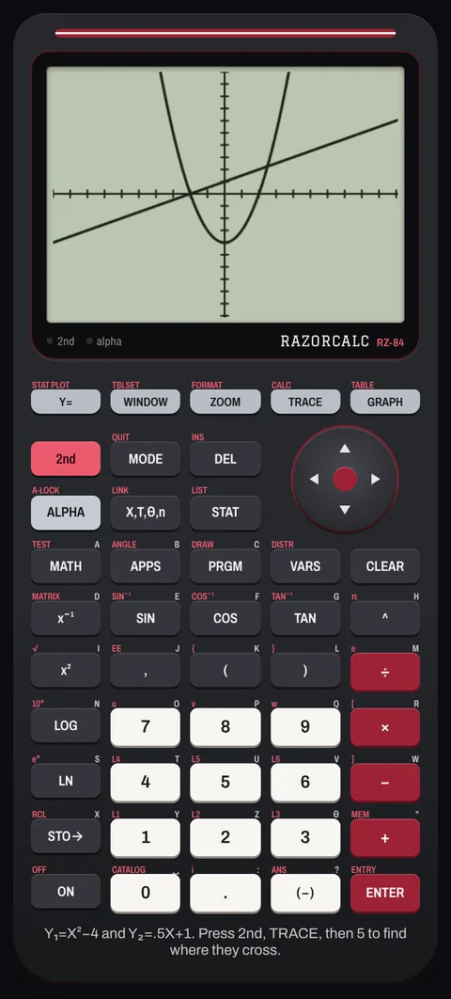

CF-01
Shipped
Oct 2026
Razorcalc
Built on my own for my Learning Assistant sessions · presented in Infrastructure and Digital Innovation (ISYS 43203)
- Problem
- Student-athletes kept showing up to my tutoring appointments without a graphing calculator.
- What I did
- Built a free calculator that works like a TI-84 and runs in any phone's browser, with nothing to install. It covers graphing, a finance solver for loans, savings and investments, and full statistics, including regressions, hypothesis tests and confidence intervals.
- Result
- Free and public, and shared through a QR code with the student-athletes I tutor. Checked against known TI-84 results and the Python libraries SciPy and NumPy: all 68 statistical results matched to at least six significant digits. Every screen was tested in an automated browser.
